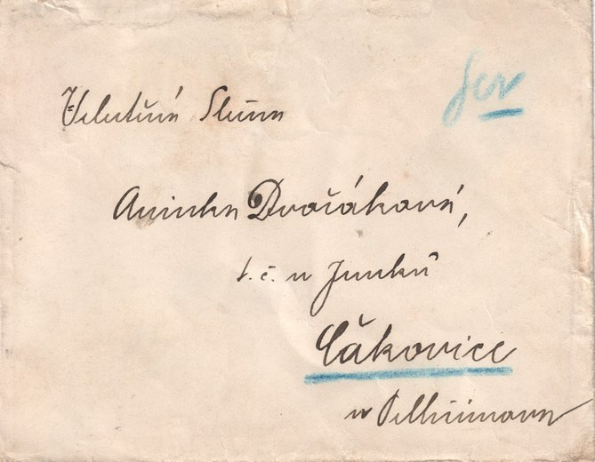
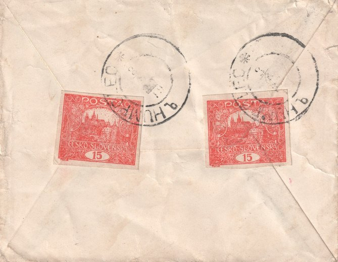
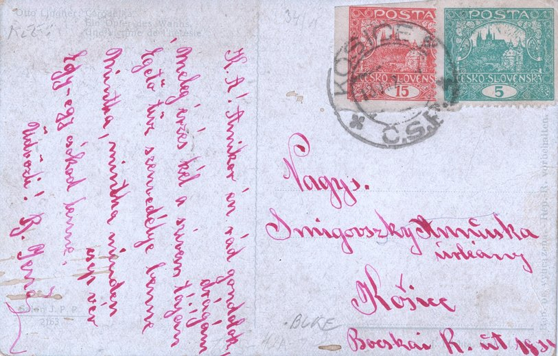

Exemples d'utilisation postale
Une galerie de lettres, cartes postales et formulaires postaux réels affranchis avec le timbre de 15 h — seul ou combiné à d'autres valeurs, de façon ordinaire ou inhabituelle. Contrairement aux analyses approfondies des articles, il s'agit ici d'un aperçu rapide de l'étendue de l'usage de cette valeur ; la galerie s'enrichit continuellement avec la collection. Cliquez sur une vignette pour l'agrandir.
Lettres
#115h + 3× 5h = 30hchamp 8 / planche I · dentelure F · le 5h également dentelure Faffranchissement multipleaffranchissement combinéPériode III

#2 · recto2× 15h = 30hchamps 9 / planche I et 2 / planche II · non denteléstimbre de fermetureaffranchissement multiplePériode II

#2 · verso2× 15h = 30hchamps 9 / planche I et 2 / planche II · non denteléstimbre de fermetureaffranchissement multiplePériode II

#32× 15h = 30hchamps 37 et 38 / planche VI · dentelure Baffranchissement multipleposition inhabituellePériode III

#42× 15h = 30hchamp 68 / planche I non dentelé + champ 8 / planche I dentelure Aaffranchissement multiplePériode III

#16 · recto2× 15h = 30hchamps 9 et 19 / planche VII · non dentelésplanche la plus rare — planche VIIaffranchissement multipleposition inhabituellePériode II

#16 · verso2× 15h = 30hchamps 9 et 19 / planche VII · non dentelésplanche la plus rare — planche VIIaffranchissement multipleposition inhabituellePériode II
Cartes postales

#51× 15hchamp 96 / planche II · non dentelé · oblitération bleueutilisation précocePériode II

#61× 15hchamp 4 / planche I · non dentelé · type à barrePériode II

#71× 15hchamp 88 / planche I · dentelure BPériode II

#81× 15hchamp 10 / planche I · non dentelénuance rouge-brun rarePériode II

#1715h + 5h = 20hchamp 34 / planche VI · non dentelénon dentelé ayant voyagé, planche VIaffranchissement combinéPériode III
Formulaires postaux
Bulletins de dépôt, mandats et bulletins d'expédition — formulaires accompagnant les envois d'argent et de colis, souvent avec un affranchissement combiné inhabituel.

#92× 15h + 2hchamps 63 et 73 / planche I · dentelure A · 2h timbre exprès Pofis 1affranchissement multipleaffranchissement conjoint

#1020h + 15h = 35hchamp 33 / planche I · dentelure E · le 20h dentelure Aaffranchissement combinéPériode III

#1115h + 50h = 65hchamp 80 / planche VI · dentelure C · le 50h non denteléaffranchissement combinéPériode III

#1215h + 100h + 10h = 125hchamp 29 / planche V · non dentelé · 10h non dentelé Pofis 6, 100h non dentelédeux timbres non émis sur un même bulletin d'expéditionaffranchissement multicolorePériode III

#13 · recto3× 15h + 5h = 50hchamps 35, 45 et 55 / planche III · dentelure A · le 5h Pofis 143affranchissement multipleaffranchissement mixtePériode IV

#13 · verso3× 15h + 5h = 50hchamps 35, 45 et 55 / planche III · dentelure A · le 5h Pofis 143affranchissement multipleaffranchissement mixtePériode IV

#14 · recto300h + 2× 15h + 20h = 350hchamps 43 et 53 / planche III · dentelure A · 300h Pofis 166 · 20h Pofis 151affranchissement multipleaffranchissement mixtePériode IV

#14 · verso300h + 2× 15h + 20h = 350hchamps 43 et 53 / planche III · dentelure A · 300h Pofis 166 · 20h Pofis 151affranchissement multipleaffranchissement mixtePériode IV

#152× 15h + 5h = 35hchamps 1 et 11 / planche III · dentelure A · le 5h dentelure Caffranchissement multipleaffranchissement combinéPériode III